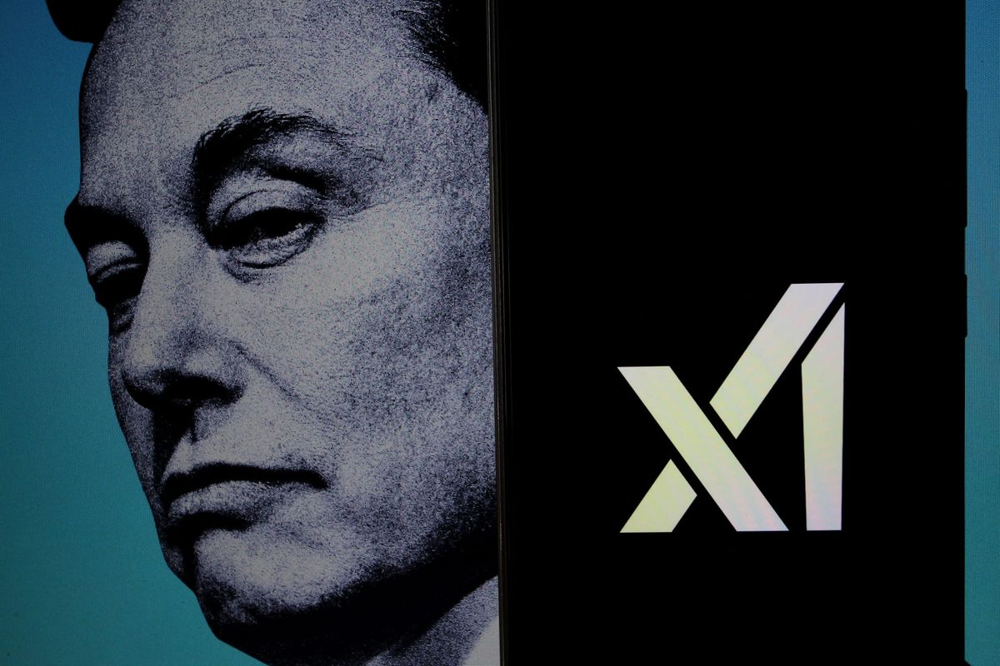
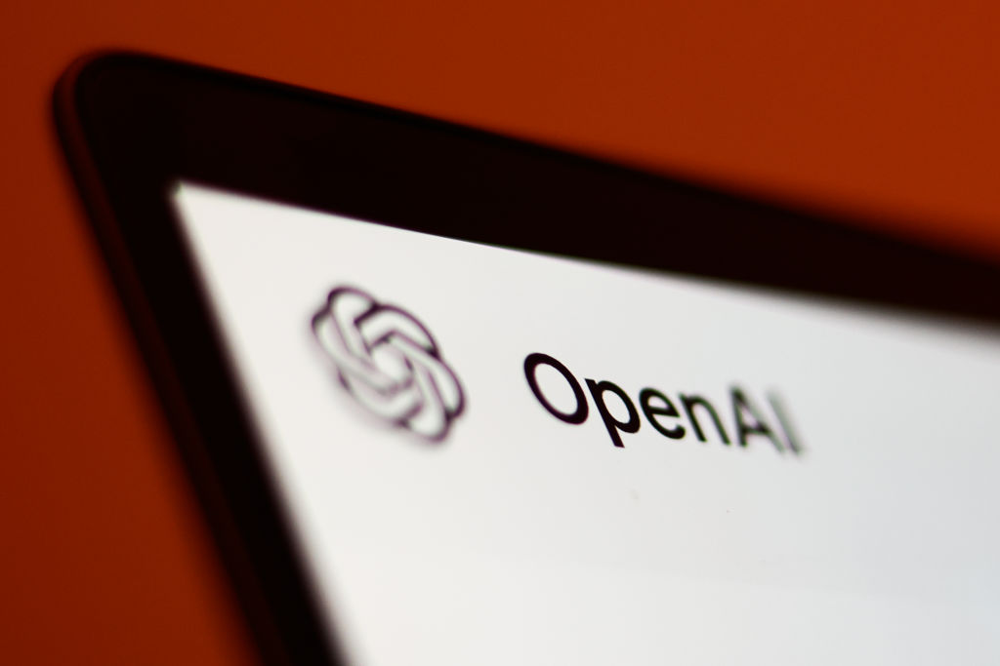
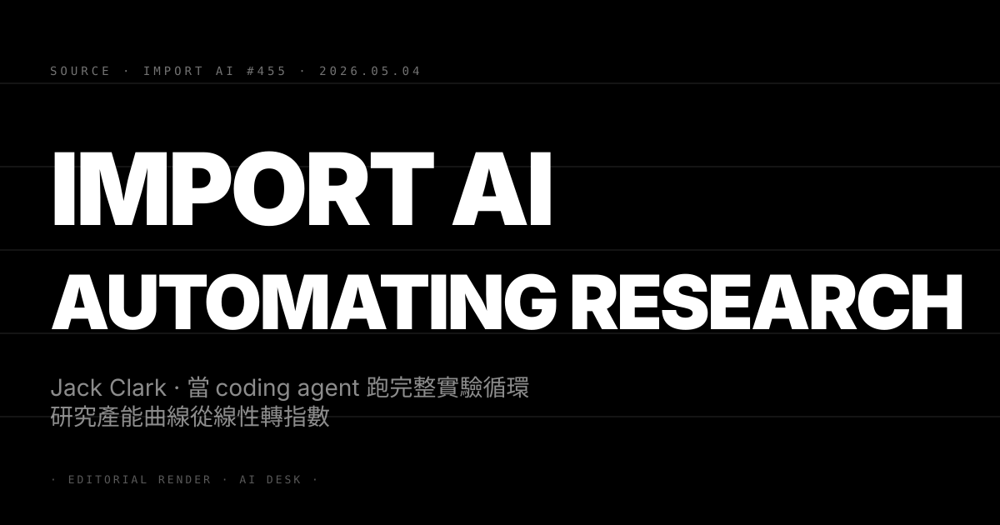

Pin · Casey Newton 一句話定調 ·「Musk 領先就不會做這筆 deal」。
Platformer 創辦人 Casey Newton 在 4 月 30 日的訂閱版電子報以「Did xAI just concede the AI race?」為題 對 xAI 過去 90 天一連串調整給出資本市場視角的判讀。Newton 列出三個觀察點。第一 Musk 與 Anthropic 在 cyber 與資安方向上達成的合作協議（5/3 的 Pentagon 與 5/7 的 Colossus 1 軌道算力故事相關）只有「xAI 自己跑不到 frontier」才會發生 — 一家認為自己領先的 frontier 廠不會把資料中心或安全評估外包給競爭對手。第二 xAI 的 Grok 路線在過去三個月明顯從「全模態 frontier 對標 GPT-5」收斂為「企業 chat + X 平台原生回覆」 等於放棄與 Anthropic Claude、OpenAI GPT-5、Google Gemini 在通用旗艦的正面對決。第三 Shivon Zilis（Neuralink 高管 與 Musk 子女母親之一）在 OpenAI–Musk 訴訟中的證詞細節被公開 — Zilis 證實 Musk 在 2023 至 2025 年間多次內部表達「我們追不上」 並在 xAI 創辦初期動用 Tesla 與 SpaceX 資源做變相補貼。
Newton 的結論並不是「xAI 倒了」 而是「xAI 從 frontier 廠重新分類為 neocloud + niche 應用商」 一如 5/7 N°48 我們已經先行寫過的市場定位轉向。差別在於 N°48 是從供應鏈與資本動作切入 今天 Newton 把這件事直接擺上「三強格局成形」的歷史定論。Newton 同時呼應 4/29 N°27 Anthropic 拒接 Pentagon 與 5/4 N°39 Anthropic 出局五角大廈之間的張力 — Anthropic 的 cyber 紅線在 2026 年 Q2 被市場重新評估為「議價權上行」而非「商機受阻」。
第一 三強格局加速從敘事變成資本配置依據。 過去 12 個月「OpenAI / Anthropic / Google + xAI / Mistral / Cohere」的多極論述支撐了一級市場對二三線 frontier 廠的高估值。今天 Platformer 把 xAI 標出名單 等於授權對沖基金與 PE 重新檢視 Mistral、Cohere、Inflection、Adept 等公司是否同樣應該被歸到 niche 而非 frontier。預期 6 至 8 週內會看到一批 frontier 標籤公司估值被 LP 重新標價。
第二 Musk 對 Anthropic 的 deal 改變 cyber 賽道權力結構。 5/3 N°37 Pentagon 把 Anthropic 排除在 frontier classified 名單之外 當時市場解讀偏負面。但 Anthropic 此後一連串動作（Mozilla Mythos、SpaceX 軌道 cyber、現在 xAI 對接）把「最保守的 cyber 政策」變成最強的 enterprise 議價籌碼。對 Anthropic 估值：900 億美元的故事正在從「LLM 訂閱」轉到「企業 cyber 平台」 估值 multiple 換錨點等於再上一階。
第三 Shivon Zilis 證詞對 OpenAI–Musk 訴訟的法律含義。 訴訟核心議題是 OpenAI 把營利主體與非營利使命分離的程序合法性。Zilis 公開 Musk「我們追不上」的內部表態 等於替 OpenAI 一方提供「Musk 訴訟動機是商業競爭而非治理捍衛」的關鍵證據。對 OpenAI：法律風險 Q3 內顯著下行 IPO 路徑風險點減少。
三個看點：
(1) xAI 在 Q3 內必補一筆 200 億美元級別的策略 round 但估值會比上一輪折讓。 xAI 已從 frontier 競爭定位轉向 neocloud + 企業應用 估值邏輯換軌後 上一輪 1300 億美元成為錨點而非地板。預期下一輪 800 至 1000 億美元區間 領投方可能是沙特 PIF 或卡達主權基金。對 Tesla：Musk 補位 xAI 的資源拉扯壓力 Q3 後緩解 但對 Tesla 自家 AI 路線的長期影響待觀察。
(2) OpenAI、Anthropic、Google 三家會在 Q3 內各自推出明確的「frontier 護城河 narrative」鎖死格局。 三強將分別把護城河釘在不同軸線 — OpenAI 走 ChatGPT 用戶基數 + Apple 整合、Anthropic 走 enterprise cyber + 政府合規、Google 走 TPU 自家硬體 + Gemini 多模態。預期 6 月至 9 月各家會推出戰略級 keynote 把護城河公開錨定。對讀者：把這三條軸線做為判斷個別 frontier 故事真偽的 checklist。
(3) 反方觀點：把 xAI 寫成「退場」可能太早 Musk 對基本面變動的容忍度極高。 Newton 的論點建立在「Musk 不做不利於自家領先位的 deal」假設 但 Musk 過去在 Tesla 與 SpaceX 都展示過「先低姿態取得資源 再用快速 iteration 反超」模式。xAI 若在 Q3 內推出 Grok 4 或 5 的 frontier 級 benchmark 翻盤 Newton 的歷史定論可能反向被打臉。對讀者：把「xAI 出局」視為 Q2 末的 base case 而非 100% 鎖定 為 Q3 的 tail-risk 場景留位。

Pin · 從 call-and-response 進到 listen + reason + translate + transcribe + take action 五件套。
TechCrunch 5 月 7 日報導 OpenAI 在 Realtime API 端推出三條新模型線 — GPT-Realtime-2、GPT-Realtime-Translate、GPT-Realtime-Whisper 同步上線。OpenAI 在公告中以一句話總結戰略意圖：「我們把即時音訊從『call-and-response』推到『真正能做事』的語音介面 它能聽、能推理、能翻譯、能轉錄、能在對話進行中採取行動」。這不是單純的 voice 模型升級 而是把語音整條 stack 從 demo 升格為 agent 基建。
三條模型線的具體分工。GPT-Realtime-2 是核心對話模型 主打低延遲串流 + 多語意圖辨識 + 情緒推論 + tool calling 把語音當作 agent 的第一介面。GPT-Realtime-Translate 處理多語即時口譯 設計目標是企業客服、跨國會議、教育場景。GPT-Realtime-Whisper 提供即時語音轉文字 對標 Otter、Rev、Fireflies 但延遲與精度都對標自家 Whisper v3 的 production 版本。計費方式：Translate 與 Whisper 按分鐘計費 Realtime-2 按 token 計費 兩種計費模式並存等於把企業採購談判的彈性留給 OpenAI sales。
OpenAI 同時公開了濫用防護機制 — 在系統內嵌入觸發點 一旦對話內容被判定違反 harmful content guideline 會即時中止串流。這條 guardrail 對 fraud / spam / 詐騙場景有直接抑制作用 是把語音 API 推向受規管產業（金融、醫療、教育）的合規前提。報導引述目標客群：客服、教育、媒體、活動、creator platform — 對應到的競爭對手包括 ElevenLabs（IVR + voice cloning）、Anthropic finance agents（金融客服）、Google Cloud Contact Center AI、Amazon Connect with AWS。
第一 OpenAI 把語音 agent 從 ChatGPT App 端 release 級體驗下放到 API 級基建。 過去 12 個月 OpenAI 的 advanced voice mode 是 ChatGPT 訂閱用戶才有的旗艦功能。今天把同等級能力下放到 API 層 等於把 voice agent 的入場門檻從「自己訓練模型 + 自己接 ASR」變成「呼叫一個 endpoint」。這條動作對 ElevenLabs（5/6 N°48 ARR 突破 5 億美元）構成直接威脅 — ElevenLabs 的 voice cloning 護城河仍在 但「即時對話 + tool use」這條最高溢價的賽道現在被 OpenAI 平台化。
第二 計費結構（按分鐘 + 按 token）的策略意義。 OpenAI 過去 API 計費以 token 為主 今天首次在同一產品線並列「分鐘」與「token」兩種模式 是把語音場景的多元計費經濟學內化到 API 平台。對企業客戶：客服場景按分鐘計費更可預測 agent 場景按 token 計費更可優化。對 OpenAI sales：談判槓桿在不同客戶場景下都有對應方案。對競品：Anthropic 與 Google 在 voice 模型的 API 化進度被加壓 預期 Q3 內必跟進對標。
第三 guardrail 嵌入是企業 AI 進受規管產業的合規通行證。 5/8 N°54 我們提到 Anthropic 用 Mozilla audit 案例把「保守政策即溢價」的故事打開。今天 OpenAI 在 Realtime API 內嵌 harmful content 觸發點 是同邏輯的另一面 — 在進入金融、醫療、教育之前 把合規話題拆分為產品內建功能 而不是事後 patch。對 CISO / Compliance officer：這條 API 在投標 RFP 時會比 ElevenLabs 更容易過合規評估。
三個看點：
(1) ElevenLabs 在 Q3 內必對接合作（OpenAI 或 Anthropic）以對沖被平台化風險。 ElevenLabs 4 月 ARR 5 億美元的核心是 voice cloning + IVR + creator 三條線 但 Realtime conversation 的高溢價場景現在被 OpenAI 直接擠壓。預期 ElevenLabs 在 Q3 會宣布與 Anthropic（為 Claude 提供 voice）或 Adobe（為 Premiere 提供 voice cloning）的策略合作 把競爭場域從「對標 OpenAI」轉到「補位 OpenAI 不做的場景」。
(2) 中國語音 AI 賽道 6 個月內估值會被重新校準。 中國 voice AI 廠（科大訊飛、出門問問、Soul、Minimax 的 voice 線）原本估值錨點是「ElevenLabs 量級」 但現在 ElevenLabs 自己被擠壓 估值錨點會集體下移。對中國同行：必須走差異化 — 多語、低算力部署、政府合規 三選一深耕 否則估值修正幅度會超過 30%。
(3) 反方觀點：voice 是 commodity 真實壁壘仍在 LLM 本體。 過去三年語音技術更迭速度極快 但真正的客戶價值仍由 LLM 本體（Claude、GPT、Gemini）決定 voice 只是 UI。OpenAI 把 voice 下放到 API 等於承認 voice 本身難以單獨變現 必須與 LLM 綁定。對企業：選 voice API 時不要只比 voice 質量 更要看背後 LLM 的長期 roadmap 與企業合約穩定度。對 voice-only 新創（Hume、Deepgram、AssemblyAI）：護城河在 6 至 12 個月內會被進一步壓縮。

Pin · SWE-Bench 從 2% 到 93.9% · METR time horizon 持續上行 · Clark 直言「engineering 自動化已就緒」。
Anthropic 共同創辦人、政策事務長 Jack Clark 5 月 4 日在個人電子報 Import AI 第 455 期發布長文「Automating AI Research」 開場第一句寫道：「AI systems are about to start building themselves（AI 系統即將開始自我建構）」。Clark 用一系列公開 benchmark 與內部觀察 拼出他眼中的「coding singularity 拐點」 並對 alignment 與政策制定者提出即時警告。
Clark 列舉的關鍵 datapoint 有三條。第一 SWE-Bench 從 2023 年底 Claude 2 的 2% 飆到 Claude Mythos Preview 的 93.9%「實質飽和 benchmark」 而 SWE-Bench 是評估 AI 解決真實 GitHub issue 能力的權威指標。第二 METR 的 time horizons plot 持續上行 — AI 系統能 50% 可靠完成的任務 對應到的「人類耗時」中位數一路從分鐘級走到小時級 對長 horizon 任務的 reliability 曲線在 2026 年 Q1 又翻一倍。第三 Clark 親身觀察 — frontier lab 與 Silicon Valley 的工程師「現在絕大多數時間在用 AI 寫程式 並讓 AI 寫測試、檢查 code」 這代表 AI 已自動化 AI R&D 的重要一環 也讓所有從事 AI 研究的人類產出加速。
Clark 的核心論點分兩層。第一層 engineering 部分（找 bug、寫測試、串實驗、分析結果）已就緒 自動化已從「工具輔助」走到「主導工作流」。第二層 也是 Clark 最希望讀者警覺的層 — 如果 scaling trend 繼續 模型很可能變得「夠創意」到能替代研究員提出新研究路徑 這一層才是真正的指數轉折。Clark 沒給時間表 但暗示時間視窗在 12 至 24 個月內 並提醒所有 alignment 研究者「我們對 AI 自動化 AI 研究的監督機制 還沒準備好」。
第一 Clark 的「自我建構」表態替 5/8 N°55 DeepMind AlphaEvolve 補上敘事完整性。 昨天 DeepMind 公布 AlphaEvolve 在數學、晶片、資料中心三領域跑出可驗證最佳化 是「AI 替人類做科學工程」的具體案例。今天 Clark 的觀點把它推到更高一階 — 不是 AI 替人類做研究 而是 AI 開始替 AI 做研究。兩條訊號合起來看：frontier lab 內部「以 AI 訓 AI 」的飛輪 在 2026 年 Q2 已從敘事進入 production。
第二 對 alignment 政策視窗收斂的緊迫含義。 過去兩年 alignment 研究的核心假設是「人類研究員仍是 AI 改進的瓶頸 故有時間建監督機制」。Clark 今天的訊號等於宣告這個假設可能不成立 — 如果 12 至 24 個月內 AI 開始自動化「想新研究路徑」的環節 alignment 機制必須在更短視窗內完成。對政策制定者（白宮 OSTP、UK AISI、EU AI Office、台灣數發部）：原本以「3 年法規視窗」為基準的 AI safety 路線圖 必須壓縮到「12 個月」否則政策永遠落後技術。
第三 對 frontier 廠的競爭含義 · 內部 R&D 速度將成為新護城河。 過去 frontier 廠的護城河是「算力 + 資料 + 人才」三軸。Clark 的論點等於宣告新增第四軸 — 「自動化 AI R&D 的飛輪效率」。對 OpenAI、Anthropic、Google、xAI 四家：誰能把內部研究員的 AI 工具化做得最深、誰就能在下一輪 frontier 突破中佔先機。預期 Q3 內會看到 Anthropic 把 Claude Mythos 的內部使用案例公開（已有 Mozilla 案例打底） OpenAI 公開 Codex 自家研究員使用率 形成新一輪「研究自動化軍備競賽」敘事。
三個看點：
(1) Anthropic 在 Q3 末必出「Claude 自家科學發現」案例 鎖定研究自動化敘事。 Clark 是 Anthropic 政策事務長 他在 Import AI 寫的長文不只是個人觀點 也是 Anthropic 對外定位的軟性鋪陳。預期 Anthropic 會在 9 至 11 月公布 Claude Mythos 或 Claude Opus 5 在數學、生物、材料科學的具名突破 對標 DeepMind AlphaEvolve 與 AlphaFold 的歷史 narrative。
(2) 學術界的 AI 研究產出曲線 6 至 12 個月內會出現 inflection。 如果 Clark 的觀察延伸到大學實驗室（MIT、Stanford、CMU、Oxford）AI 研究 paper 數量曲線會在 2026 H2 看到統計學上顯著的拐點。對學術出版（arXiv、NeurIPS、ICML）：審稿與重複實驗驗證流程會被迫升級 預期 H2 內會出現第一篇「主要由 AI agent 產出 + 人類監督」的 NeurIPS 主榜論文 觸發學術倫理大辯論。
(3) 反方觀點：benchmark 飽和不等於真實研究能力 Clark 過於樂觀。 Clark 引用 SWE-Bench 93.9% 為核心論據 但 benchmark 飽和有兩種解釋 — 一是模型真的好 二是 benchmark 本身的天花板被 reach。歷史上 ImageNet、GLUE、SuperGLUE 都經歷過「飽和後新 benchmark 出爐 模型實際能力被重新校準」的循環。METR 的 time horizon 數據對長 horizon 任務的 reliability 仍在 50% 量級 距離真實「自主研究員」差距巨大。對讀者：把 Clark 的訊號視為「方向正確但時間表可能拖長 2 至 3 倍」的 base case。